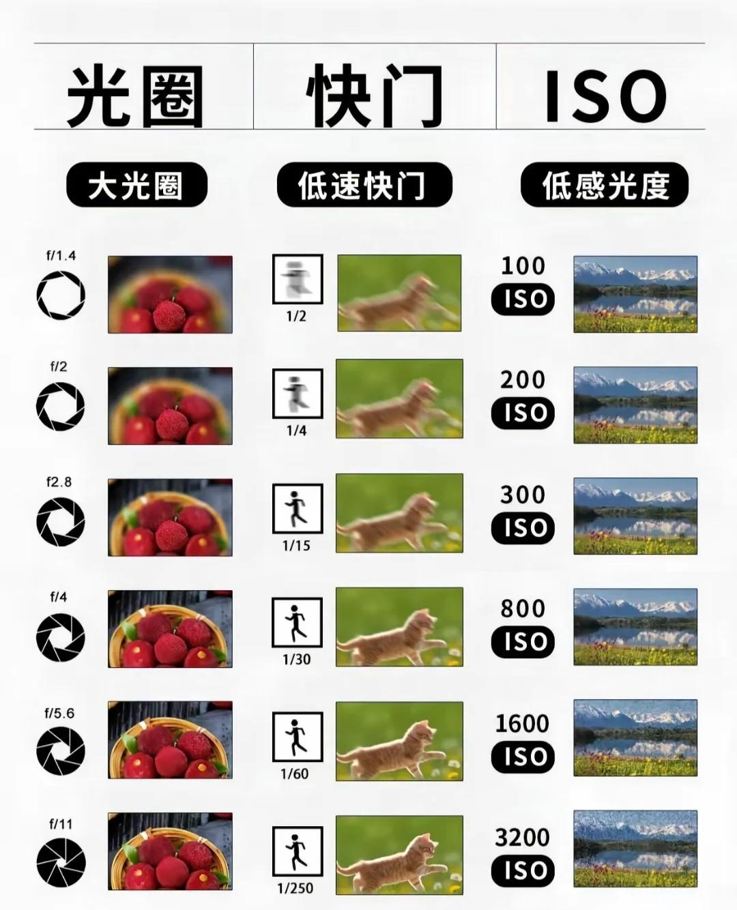

光影魔法三角公式

摄影三要素：快门、光圈、ISO，掌握它们就能拍出好照片 📸
快门 🚪
控制曝光时间，就像控制水龙头的开关时间。快门速度越快，进光量就越少，适合捕捉快速运动的瞬间；而快门速度慢，进光量多，适合拍摄夜景或制造动感模糊效果。
光圈 🌐
控制进光量和景深，就像调节水龙头的开口大小。光圈越大（f值越小），进光量越多，景深越浅，背景虚化效果越明显；光圈越小（f值越大），进光量越少，景深越深，画面整体更清晰。
ISO 📊
影响照片亮度和噪点，就像感光元件的敏感度。ISO越高，照片越亮，但噪点也越多；ISO越低，照片越暗，但画质更纯净。
三者关系 🔗
快门、光圈、ISO三者相互制约，共同决定照片的曝光。例如，想要拍摄背景虚化的人像照片，可以使用大光圈（如f/2.8），同时降低ISO或提高快门速度来保证曝光准确。